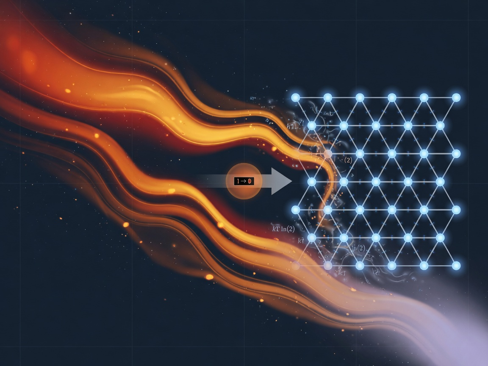
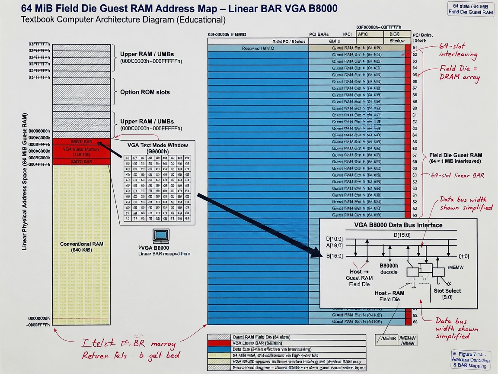

Chapter 8 · Die-Resident Universe — Field Die & Data Bus
Learning objectives
After this chapter you should be able to:
- State why the Field Die is 64 MiB of addressable guest RAM on the GPU, not a userspace DOS emulator cosplay.
- Draw the guest linear map from IVT through VGA at
0xB8000to the C mirror at0x01000000. - Enumerate all
data_bus[64]slot families and explain how host and shader stay coherent each dispatch. - Describe the L0–L9 layer pump, GPU
x86.compexecution, and optionalFieldX86Emuhost assist. - Read ZMM1024 tile cache hex on the Big Grin HUD without confusing visual chrome for instrumentation.
On the way — what you will learn
The Field Die is a universe with coordinates on the GPU — 64 MiB guest RAM, not DOS nostalgia. On the way you will memorize the linear map, read data_bus[64] slots, pump L0–L9 layers, and interpret Big Grin HUD hex without confusing chrome for instrumentation.

- Guest offsets: IVT, BDA, VGA, mirror
- Execution: x86.comp default, host assist optional
- Telemetry spine and pump generation
- ZMM1024 tile cache literacy
Introduction — the die-resident universe
Chapter 7 named the dispatch spear: vkCmdDispatch on a thin host that seals time, enforces CFL, and binds FieldX86Die at descriptor slot 1. Chapter 8 names what lives inside that SSBO. The Field Die is 64 MiB of addressable reality on the GPU — guest RAM where RTX-DOS, AmmoOS, and operator-launched programs execute, VGA text renders, FAT layers mount, and telemetry packs into data_bus[64] every tick.

Reality is 3D in this stack means: bytes have offsets, layers have slot bases, HUD fields have indices. Time is linear means: pump generation increments, dispatch steps accrue in ThermoAccountant, sealed time in FieldSocket does not rewind. Energy can be moved means: fabric coupling heats the story the die tells — thermo mirrors land in bus slots the Big Grin HUD reads.
This is not DOSBox in a trench coat. DOSBox is a userspace machine with its own timing myths. Field Die is the same SSBO mapped host and GPU, pumped via FieldLayer::pumpAll(), interpreted by x86.comp on the default canvas. The host can assist with FieldX86Emu when ControlHostCpu is set; the product default remains GPU interpretation. Chapter 12’s honesty table will remind you: headers over nostalgia.
Cross-links: Chapter 2 introduced scale 2 — die bytes beside texels and packets. Chapter 4 placed ThermoAccountant mirrors at data_bus[24–28]. Chapter 9 publishes Tesla bias to slots 31 and 34. Chapter 10 reads fabric averages that were visible on the bus one tick earlier. Chapter 11 teaches grep; this chapter teaches addresses.
Field Die — what is implemented
- 64 MiB guest RAM (
GUEST_RAM_BYTES/FieldPlatform::GUEST_RAM_BYTES) - VGA color text at guest
0xB8000(80×25 heritage; Big Grin HUD 172×48 in shader compose) - C hot mirror at
0x01000000(HD_MIRROR_BYTE/FieldPlatform::HD_MIRROR_BYTE) - Boot vector at
0x7C00, IVT at 0, BDA at0x400 - Same SSBO for host peek and GPU write — not a forked emulator core
FIELD_LAYOUT_VERSION = 5must match host andx86.comp— Chapter 7
Operators grep GUEST_RAM_BYTES and FieldX86Die in Navigator/engine/ to see allocation constants. Version skew on layout version breaks HUD hex before it breaks your nostalgia — layout is physics.
Guest linear RAM map — addresses operators memorize
From FieldLayer::RamMap namespace — offsets within the guest map:
| Offset | Region | Operator note |
|---|---|---|
0x00000000 | IVT base | Interrupt vector table — real x86 layout discipline |
0x00000400 | BDA | BIOS Data Area — video mode, cursor, drive count |
0x00007C00 | Boot vector | MBR / boot sector staging |
0x00020000 | Disk image base | A: floppy image staging |
0x00090000 | DOOM palette | Game-path palette byte (when launched) |
0x000A0000 | VGA graphics / DOOM FB | Planar mode 13h framebuffer region |
0x000B8000 | VGA text | Color text buffer — DOS habit |
0x01000000 | HD mirror | C: hot mirror — host/guest coherence |
BDA fields matter for layers: BDA_VIDEO_MODE at BDA+0x49, columns at +0x4A, cursor col/row at +0x50/+0x51, drive count at +0x75. VGA layer sync reads these each pump so data_bus VGA slots reflect mode truth.
When an operator says “I see text at B8000,” they are speaking field literacy — address-first, not “it looks like DOS.” Chapter 12 rewards that habit.
Execution model — GPU first, host assist optional
- GPU:
x86.compinterprets guest instructions, composes Big Grin HUD (172×48), applies AmouranthOS chrome from bindings 11–14, reads/writesFieldX86DieSSBO. - Host assist:
FieldX86EmuwhenControlHostCpu(flag 8) in FieldSocket — 8086 path on CPU for debug or hybrid scenarios. - Launch path:
FieldAmouranthLaunch/FieldAmouranthExecwhenControlAmmoExec(1024) — guest programs enter address space with receipts.
Default ./linux.sh run does not require host CPU emulation. ThermoAccountant still adds hostHeat from FieldX86Emu::hostCyclesLastFrame() when assist runs — comparative signal, not billing.
GPU interpretation is offense at silicon speed: each dispatch may advance guest IP, touch VGA bytes, update FAT tables, pack bus words. The host’s job is pump, seal, guard — not pretend GPU work did not happen.
data_bus[64] — telemetry spine
Sixty-four packed words per dispatch. Mirrored host-side in Options::Canvas::DataBus and exposed to shaders through FieldSocket pathways. This is the telemetry field Chapter 2 named — not SI units, but operator-grep-able agreement surface.
| Slots | Content | Pack source |
|---|---|---|
| [0] | Pump generation tag | FieldLayer::pumpAll registry |
| [1] | Cycles per frame / pump cadence | Dispatch counters |
| [2–7] | RAM layer — HD ready, mirror bytes, boot vector, floppy size, guest RAM size, mirror offset | ramPack |
| [8–11] | VGA layer — mode, DAC, viewport telemetry | vgaPack |
| [12–15] | FAT / AMMOFAT geometry | fatPack |
| [16–23] | Analog FCC floats — TimeScale through FieldCoupling | Host analog guard + FieldSocket |
| [24–28] | ThermoAccountant mirrors — entropy, boundary, maint, income, steps | Binding 2 each dispatch |
| [31] | Tesla valve coherence word | teslaBias() path |
| [32–41] | Input — keyboard, mouse, joystick slots | FieldInput pack |
| [34] | Tesla bias strength / directional word | FCC + hardware mirror |
| [42–56] | Viewport + AmouranthOS chrome flags, compositor HUD | FieldDosViewport, AOS pack |
| [57–59] | Audio rack status | Audio layer pump |
| [60–61] | BIOS / shell boot flags | FieldBios pack |
| [62] | IO hub / joystick ports | FieldDevices |
| [63] | Drive ready mask + current drive | FieldDrives |
Slot 42 is the AmouranthOS chrome flag word — desktop vs console shell, menu state, overlay bits. Slots 50–51 may carry infinite field layer strip for shader HUD; 54 carries DOS FAT mounted bit per viewport header comments. When wiki and headers disagree on a slot, grep wins — Chapter 12’s first trust rule.
Analog FCC floats — slots [16–23]
When x86 FieldSocket is active, analog knobs mirror into the bus so guest HUD and host prompts read the same floats:
[16] TimeScale [17] ThermoAlpha [18] WaveSpeed [19] GateFidelity [20] EntropyFloor [21] InjectStrength [22] PropalacticScale [23] FieldCoupling
Chapter 3 defined knob effects on fabric; Chapter 9 shows CFL scaling before these reach bindings 8–10. On the die path, FCC floats are double witness — fabric evolves AND bus records what the host admitted past the guard.
Prompt set AnalogFields.WaveSpeed 1.4 changes host state; next dispatch packs slot 18. If THERMO moves but slot 18 does not, you have a pump or layout bug, not “physics feelings.”
ThermoAccountant mirrors — slots [24–28]
Every dispatch copies binding 2 accountant into bus mirrors for HUD and grep:
| Slot | Field |
|---|---|
| [24] | entropyThisFrame |
| [25] | avgBoundaryThermo |
| [26] | prevMaintCost |
| [27] | freeEnergyIncome |
| [28] | steps |
Still mandatory receipts. Zero entropy with moving fabric on die canvas is failure — same rule as Classic canvas Chapter 3 drill.
Tesla valve bus words — slots 31 and 34
Directional bias constants from FieldRtxFieldAbs.hpp:
TESLA_R_FORWARD = 0.18 TESLA_R_REVERSE = 3.2 FIELD_PHI_MILLI = 618
Published to data_bus[31] and data_bus[34] via teslaBias() and TeslaBiasStrength FCC path. Chapter 9 explains fluidic diode metaphor; Chapter 10 shows reverse damping on spiderweb edges.
Input bus — slots [32–41]
FieldInput packs keyboard, mouse, and joystick state into ten words — offense from operator fingers becomes guest boundary conditions. Probe injection on fabric (Chapter 3) and input slots are cousins: both impose energy and intent on the next tick.
Mouse coordinates and button masks land in predictable sub-ranges within [32–41] per FieldLayer::BusMap::INPUT_BASE. When chrome hit-testing disagrees with guest input, compare FieldSocket control flags, viewport pack at [42+], and shared layout constants (TASKBAR_H, UI_BOOST) against x86.comp.
Viewport and AmouranthOS — slots [42–56]
FieldDosViewport and AmouranthOS pack compositor telemetry — desktop shell, start menu, console overlay, layer strip for shader HUD. Slot 42 is the chrome flag word operators see in research traces. Bindings 11–14 supply textures; bus words supply state. Both must sync on boot — FieldAmouranthOs::boot(), sync_aos_textures().
Audio, BIOS, IO, drives — slots [57–63]
| Slots | Layer |
|---|---|
| [57–59] | Audio rack status |
| [60–61] | BIOS shell / boot flags |
| [62] | IO hub — joystick / port multiplex |
| [63] | Drive ready mask + current drive |
Field layers L0–L9 — composable DOS subsystems
Layers are how DOS becomes legible to shaders without breaking the address map. Each layer registers syncFromGuest, tick, packToDataBus hooks. FieldLayer::pumpAll() increments pump generation at slot [0], walks the registry, keeps guest and bus coherent.
Ten composable layers: RAM, VGA, FAT, MSCDEX, Audio, IO, BIOS — plus registry infrastructure. Pump order is not arbitrary; audio follows viewport because HUD ear and eye share compose discipline.
ZMM1024 tile cache — fabric samples in the die tail
Tail region in FieldX86Die SSBO holds shader-side fabric sample cache for HUD hex dumps. Tile cache is read-mostly witness for debug overlays (ControlFieldDebugHud flag 2048). It is not a second simulation.
Not DOSBox — architectural comparison
| Question | DOSBox habit | Field Die answer |
|---|---|---|
| Where is RAM? | Host heap emulate | SSBO binding 1, GPU + host map |
| Who interprets CPU? | Host interpreter | x86.comp default; optional FieldX86Emu |
| Where is time? | Emulator cycle hacks | TotalTime::seal() + dispatch steps |
| Telemetry? | External tools | data_bus[64] every tick |
| Fabric? | N/A | Bindings 8–10 coupled |
Walkthrough — one dispatch tick on the die
Dispatch N at sealed time T: host seals FieldSocket time, runs CFL guard on FCC destined for slots 16–23, calls FieldLayer::pumpAll() for L0–L9, populates ThermoAccountant into 24–28, writes Tesla 31/34, mirrors hardware from fabric, issues vkCmdDispatch on x86.comp. Guest IP advances; VGA updates; Big Grin composes; STATUS reports entropy ~5s. Operator list AnalogFields matches bus FCC mirrors. Coherence is the goal; grep is the witness.
Dispatch N+1: slot [0] pump tag changes when layers changed guest; slot [28] steps increment; sealed time never rewinds.
AmmoOS boot — chrome on the die
aos_load, FieldAmouranthOs::boot(), texture sync on bindings 11–14, shared hit-test constants with shader. Launchers use FieldAmouranthLaunch / FieldAmouranthExec. Chapter 21 Queen inherits gate doctrine trained early on die chrome.
Integration — fabric, die, packet field
FCC on bus ties die HUD to bindings 8–10. Tile cache peeks fabric without CPU mirror. Spiderweb mirror (Chapter 10) reads same averages. Packet field (Chapter 5) stays NEXUS-local — correlate at panel :9477, not inside SSBO.
Operator drill — week one die literacy
./linux.sh run 2>&1 | tee run.log grep -E 'THERMO|pump|FieldLayer' run.log | tail -30
grep -E 'B8000|GUEST_RAM|HD_MIRROR|FieldX86Die' Navigator/engine/FieldLayer.hpp
set AnalogFields.FieldCoupling 0.7 list AnalogFields
Common failures — die literacy
| Symptom | Likely cause | First action |
|---|---|---|
| Black HUD, alive stderr | Chrome texture sync skipped | bindings 11–14 |
| Guest text garbage | VGA/BDA desync | BDA 0x400+0x49 |
| Input dead | Hit-test mismatch | slot [42], layout constants |
| Bus zeros, fabric moves | pumpAll skipped | dispatch_canvas pump |
RAM layer — slots [2–7] field guide
Slot [2] HD ready — C mirror path live. Slot [3] mirror byte count — monotonic during sync. Slot [4] boot vector echo. Slot [5] floppy image size. Slot [6] GUEST_RAM_BYTES witness. Slot [7] HD mirror offset. When guest mounts media but [2] stays zero, grep FieldDos::hdReady and pump order before shaders.
VGA layer — BDA and mode truth
Slots [8–11] pack mode, DAC, viewport from BDA. Text vs graphics transitions must update BDA before pump. Mode 13h touches 0xA0000. Cursor at BDA+0x50/+0x51 must match chrome caret.
Bus ordering — thermo vs layer packs
Thermo mirrors [24–28] follow layer pump in dispatch_canvas source order. Grep Pipeline implementation when debugging slot stories — static tables are maps, not timelines.
KILROY die vocabulary
Kernel CONFIG_RTX_FIELD_DIE shares die words with userspace — Chapter 9 FCC, Chapter 21 packaging. Same literacy; different ring enforcement.
Comparative table — telemetry vs packet field
| Aspect | data_bus[64] | Packet field |
|---|---|---|
| Product | AMOURANTHRTX | NEXUS-Shield |
| Granularity | Per dispatch | Per connection |
| Correlate | stderr THERMO | Panel :9477 |
Chapter summary
Field Die is 64 MiB guest RAM on SSBO binding 1. Guest map: IVT → BDA → boot → VGA → HD mirror. GPU x86.comp default; FieldX86Emu optional. data_bus[64] telemetry spine with FCC, thermo, Tesla, input, chrome, audio, BIOS, IO, drives. L0–L9 pumpAll(). ZMM1024 tile cache for fabric hex. Trust addresses and grep before nostalgia.
Prior: Chapter 7 — GPU Engine. Next: Chapter 9 — FCC & Tesla.
Deep dive — FieldLayer.hpp bus map constants
The engine names slot bases in FieldLayer::BusMap so operators grep one header instead of memorizing folklore. REGISTRY_TAG = 0, RAM_BASE = 2, VGA_BASE = 8, FAT_BASE = 12, MSCDEX_BASE = 24, INPUT_BASE = 32, VIEW_BASE = 42, AUDIO_BASE = 57, BIOS_BASE = 60, IO_BASE = 62, DRIVES_BASE = 63, BUS_COUNT = 64. Analog FCC and ThermoAccountant mirrors occupy slots defined in dispatch populate code — always reconcile BusMap with Pipeline mirror order when debugging “slot 24 looks wrong.”
Layer IDs L0 through L9 give composable subsystems identity in the registry table. Each entry is a FieldLayer struct: id, name, syncFromGuest, tick, packToDataBus. This is plugin architecture for DOS semantics — RAM is not hard-coded only in one function; it registers beside VGA and FAT so pumps stay modular as AmmoOS grows.
Deep dive — FAT layer and AMMOFAT geometry
Slots [12–15] expose FAT geometry — cluster size, free space story, mount bits — so shader HUD and host agree whether A: is fiction. Guest software that formats or writes directory tables must see pump updates within dispatches or operators grep stale [12–15] while guest DIR command shows truth. FAT is where retro launch pedagogy meets address literacy: launching shareware is not separate from field dispatch; it is guest code writing regions the RAM and FAT layers must reflect.
When MSCDEX optical layer participates, redirector state must align with drive mask slot [63]. Mixed retro configs are where week-two operators earn scars — document which launches you actually exercise, not which launches marketing implies.
Deep dive — Big Grin HUD as monitor
Big Grin at 172×48 is a field monitor dressed as grin. With ControlFieldDebugHud (2048), overlay hex exposes bus slices and tile cache peeks. Without debug flag, stderr remains primary witness — Chapter 11. Train grep before training hex eye candy; numerology is what happens when hex precedes THERMO discipline.
HUD compose shares thermodynamic boundary with HDR output binding 0 — beauty costs maintenance per prevMaintCost slot 26. Die canvas is not thermo-exempt because chrome is pretty.
Deep dive — host peek discipline
Host may map SSBO for debug read. Writes outside pump contracts desync GPU truth. ControlHostCpu path tightens rules: host assist is not license to scribble guest RAM off-pump. Default GPU interpretation keeps host as orchestrator — Chapter 7 thin host, fat GPU.
CI headless runs must still pump and dispatch — valid signal per Chapter 12. Die bytes move without window; stderr proves life.
Deep dive — entropy on die canvas
ThermoAccountant fields on bus [24–28] copy every dispatch. entropyThisFrame aggregates field work, probes, Tesla terms, optional host x86 heat. avgBoundaryThermo is holographic boundary metaphor with number — label proxy, still read it. freeEnergyIncome includes sealed time — Chapter 7 — plus input activity. steps at [28] monotonic; flat steps with moving VGA is incoherence.
Chapter 4 taught two entropies — ThermoAccountant vs Shannon oracle. Die operators who only run AMOURANTHRTX still need that separation before opening NEXUS file entropy tools.
Deep dive — cross-chapter operator week two
Week two ties Chapters 7–11: Monday grep dispatch spine and layout version 5. Tuesday map guest RAM and bus table from this chapter. Wednesday CFL and Tesla drills Chapter 9. Thursday list Hardware spiderweb Chapter 10. Friday panel archive one jsonl row Chapter 11. Weekend read Chapter 12 rocks before tweeting screenshots. Field Technology is practiced literacy, not consumed hype.
Deep dive — Queen and die chrome training
Queen browser Chapter 21 holds gates on full web capabilities. Die AmmoOS chrome is smaller surface but same doctrine: capabilities exist, wires earn receipts, loopback truth. Slot 42 flags train operators that UI state is bus-addressable — web gates will also be jsonl-addressable. Learn addresses young.
Slot-by-slot narrative — words 0 through 15
Slot 0 is pump generation — heartbeat of layer registry. If you log slot 0 across one second of STATUS cadence and see flatline while FAT words change, your pump is partial. Slot 1 carries cycles-per-frame story — compare to FPS in STATUS for sanity. Slots 2–7 are RAM family: HD ready, mirror bytes, boot vector, floppy size, guest RAM size, mirror offset — each word is a sentence in “does storage exist?” Slots 8–11 are VGA family: mode from BDA, DAC path, viewport cols/rows habit — “does the guest see what it thinks it sees?” Slots 12–15 are FAT family: AMMOFAT geometry — “can directory tables be trusted this tick?”
Operators building custom HUD shaders should read but not invent — if your shader reads slot 9, grep vgaPack to learn bit layout. Inventing bitfields without grep is how forks ship pretty lies.
Slot-by-slot narrative — words 16 through 41
Slots 16–23 are FCC floats — TimeScale, ThermoAlpha, WaveSpeed, GateFidelity, EntropyFloor, InjectStrength, PropalacticScale, FieldCoupling — admitted post-CLF guard Chapter 9. Slots 24–28 are ThermoAccountant mirrors — entropy, boundary, maintenance, income, steps — Chapter 4 receipts on the bus. Slot 31 Tesla coherence; slot 34 Tesla bias strength — directional story with constants 0.18 forward and 3.2 reverse. Slots 32–41 input family — keyboard scancodes, mouse position and buttons, joystick axes — operator fingers as boundary conditions.
Changing FieldCoupling in prompt without watching slot 23 and THERMO together is week-one homework unfinished. Changing GateFidelity without watching Flow fabric and spiderweb util is week-two homework unfinished.
Slot-by-slot narrative — words 42 through 63
Slots 42–56 viewport and AmouranthOS compositor region — slot 42 chrome flags are the famous word in June 2026 research traces; higher slots carry layer strip, compositor header, glow/sharpen telemetry per viewport headers. Slots 57–59 audio rack — ear story beside eye. Slots 60–61 BIOS boot flags — shell state. Slot 62 IO hub. Slot 63 drive mask — which drive letter habit is live. Sixty-four words, one dashboard — telemetry field Chapter 2 named.
Guest launch case study — DOOM path addresses
When operator launches DOOM-class guest images, RamMap regions matter: palette near 0x90000, framebuffer at 0xA0000, VGA mode via BDA. Dispatch still runs pump, CFL, thermo, Tesla — retro is not escape from field literacy. Watch entropy rise with input slots active and maintenance cost with framebuffer persistence. If guest runs but thermo flat, dispatch path failed — not “old games don’t count.”
Guest launch case study — RTX-DOS panel
ControlRtxDos flag 64 enables RTX-DOS panel surface — still inside same SSBO map. Panel is boundary condition on chrome and guest, not separate emulator. Grep control flags in FieldSocket when panel state disagrees with slot 42.
Field Die SSBO memory layout — binding 1
Descriptor binding 1 is not only 64 MiB linear guest — tail holds ZMM1024 tile cache for fabric samples. Total allocation is guest map plus cache tail per headers. Forks that shrink tail without updating shader see HUD hex garbage at fabric peek region — layout version 5 contract again.
Data bus and ELLIE logging correlation
ELLIE does not print all 64 words each frame — that would drown operators. THERMO and STATUS carry aggregates. When debugging bus, use prompt list AnalogFields for FCC, grep THERMO for accountant, enable debug HUD for hex peeks. Chapter 11 observability doctrine: right witness for right question.
Local-first die ethics
Die telemetry stays on machine — no phone-home in pump. Packet field jsonl also local-first Chapter 5. Queen Chapter 21 holds gates without cloud perimeter mythology. Field Die literacy supports sovereign operator posture — your bytes, your bus, your grep.
Operator journal — week two prompts
- Draw RAM map from memory; check against Figure 8.1 notes.
- Copy one THERMO line; label entropy, boundary, maintenance fields.
- Change one FCC float; record which bus slot should move.
- Note slot 42 semantics after clicking start menu.
- Correlate dispatch session time with one NEXUS jsonl timestamp.
- Explain to a friend why Field Die is not DOSBox without being rude.
- Grep FIELD_LAYOUT_VERSION in host and shader; record value.
- List three layers from L0–L9 and their pack slot ranges.
Teaching the die to another operator — long-form
When you teach Field Die, start with addresses, not aesthetics. Show ./linux.sh run default x86, point at Big Grin, then open FieldLayer.hpp RamMap on disk. Walk one guest offset: B8000 text. Walk one bus slot: 42 chrome. Walk one stderr line: THERMO entropy. Only then swipe to Classic for pretty thermo colors — pedagogy order matters. Newcomers who start on Mandelbulb swipes think engine is raymarch toy; you failed them if you skip die default.
Second lesson: pump generation slot 0. Increment means layers walked. No increment means pump broken. Third lesson: FIELD_LAYOUT_VERSION 5 — host and x86.comp match. Fourth: data_bus is not magic array; it is contract renewed every dispatch. Fifth: optional FieldX86Emu — assist, not default. Sixth: tile cache tail — fabric peek, not second world. Seventh: correlate with panel jsonl when teaching defense — offense and defense couple at human, not at SSBO.
Teaching mistakes to avoid: calling it DOSBox; calling HUD hex calorimetry; ignoring CFL because die “is not fabric focus”; claiming packet field inside Vulkan; skipping sealed time when discussing thermo income. Each mistake is Chapter 12 honesty row waiting to happen.
Revision history posture — v5 die map
Field Technology v5 consolidates June 2026 main-branch facts: default x86.comp, 64 MiB guest, 64-word bus, layout version 5, Tesla slots 31/34, AmouranthOS chrome on 11–14 and bus 42. Older marketing that said decorative CANVAS default is wrong — Chapter 12 trust rule three: ./linux.sh run default is Field Die. Wiki quick reference may lag; grep and this chapter carry v5 contract.
Worked example — debugging stale VGA
Symptom: guest program prints text, HUD shows wrong mode word at slot 8. Step one: read BDA byte at guest 0x449. Step two: read bus slot 8 after pump. Step three: if mismatch, layer syncFromGuest not running or guest wrote BDA after pump — check dispatch order. Step four: if match but HUD wrong, shader reads wrong packing — layout version skew. Step five: grep vgaPack and FIELD_LAYOUT_VERSION. Do not recompile world before step five.
Worked example — debugging chrome clicks
Symptom: clicks miss buttons. Step one: slot 42 flags — menu open? Step two: TASKBAR_H and UI_BOOST constants match x86.comp? Step three: input slots 32–41 updating on move? Step four: ControlFieldDebugHud for hit regions? Step five: correlate with Chapter 7 RayCanvas layout. Chrome bugs are address bugs until proven otherwise.
MSCDEX, audio, and IO — peripheral layers as fields
Retro computing is not only CPU and VGA — optical drives, audio racks, and IO ports are also addressable stories. MSCDEX layer registers redirector behavior; audio layer packs rack status into slots 57–59 after viewport processing; IO layer concentrates port hub state in slot 62; drives layer compresses ready mask into slot 63. Each peripheral is a field slice: values persist across ticks until pump updates them. Teaching the die as “just VGA” misses half the composable registry.
When guests access CD-ROM class drivers, MSCDEX sync and tick must run — bus words near MSCDEX base in layer headers should move. Silent bus during active guest CD driver means layer not registered or pump skipped. Grep FieldLayer table registration in engine sources; count layers, do not assume.
Audio telemetry is not audiophile measurement — it is dashboard state for shader compose and HUD ear icons. Label when presenting to outsiders; label Implemented when grep shows pack hooks.
Control flags cheat sheet — FieldSocket bits
| Flag | Value | Effect on die |
|---|---|---|
| ControlHostCpu | 8 | FieldX86Emu host assist path |
| ControlRtxDos | 64 | RTX-DOS panel surface |
| ControlAmmoExec | 1024 | Guest execution active |
| ControlFieldDebugHud | 2048 | Die monitor overlay hex |
Flags ride FieldSocket push constants Chapter 7 — not in data_bus, but control how die and HUD interpret bus and guest. Debugging requires both grep flags and read bus words.
Capstone — die sentence
One sentence for Chapter 8 exam: The Field Die is sixty-four megabytes of guest address space and sixty-four words of dispatch telemetry on one SSBO binding, pumped by composable layers, interpreted by x86.comp each vkCmdDispatch, witnessed by stderr and honest operators. If you can say it without looking, you are ready for Chapter 9 stability under load.
Extended capstone checklist: (1) Quote GUEST_RAM_BYTES. (2) Quote B8000 and HD mirror offsets. (3) Name FCC slot range. (4) Name thermo mirror range. (5) Name Tesla slots. (6) Name chrome flag slot. (7) Name default execution path GPU vs host. (8) Name pump function. (9) Name layout version constant. (10) Name three sibling chapters you will read next. Passing ten without notes means die literacy is real; failing three means rerun week one drills before operating Queen or NEXUS perimeter alone.
Field Die is the product soul AMOURANTHRTX ships June 2026 — everything else in swipe list is curriculum around that soul. Operators who internalize bus and map carry that soul into kernel KILROY path and Queen browser path without relearning vocabulary — same words, stronger rings, honest labels always.
Final drill before Chapter 9: run default x86 sixty seconds, tee log, grep THERMO and pump, list AnalogFields once, sketch bus table columns on paper from memory, compare paper to this chapter table. Discrepancies are study material, not embarrassment. Field Technology assumes you will run the stack — reading without running is theory without operator reality Chapter 12 warns against.
Remember sibling links: Chapter 7 gave dispatch; Chapter 8 gave map and bus; Chapter 9 will give CFL and Tesla stability; Chapter 10 hardware mirror; Chapter 11 grep; Chapter 12 rocks. The engineering core 7–12 is one continuous weapon — literacy — not six disconnected blog posts.
Die literacy closing affirmation: you now own the vocabulary for guest offsets, sixty-four bus slots, layer pumps, GPU x86.comp default, optional host emu, tile cache tail, and chrome slot forty-two. Use it every dispatch you run. When in doubt, grep FieldLayer.hpp, read THERMO stderr, and trust FIELD_LAYOUT_VERSION five before trusting a screenshot.
We do not hide the rocks: the die is implemented, the bus is implemented, the pump is implemented — and the labels on thermo, Tesla, and chrome are honest about what is metaphor versus what you can grep tonight on your own machine. Proceed to Chapter 9 when bus and map are muscle memory, not merely bookmarked tabs in this textbook. Then go grep.
Further reading
Wiki: 08 — Field Die & Data Bus. Headers: FieldLayer.hpp, FieldRtxFieldAbs.hpp, FieldDosViewport.hpp. Prior: Ch 7. Next: Ch 9. Sibling fabric: Ch 3, Ch 4.
Study questions
- Why is Field Die “not DOSBox” in three sentences?
- Quote VGA text and HD mirror guest offsets.
- Name five
data_busslot families. - What hooks does each FieldLayer register?
- Where do ThermoAccountant mirrors land?
- What constants feed Tesla slots 31 and 34?
- When does
FieldX86Emurun? - What is ZMM1024 tile cache for?
- Which slot carries AmouranthOS chrome flags?
- How does die telemetry relate to Chapter 2’s three scales?
Evidence anchor — grep and sources
Major claims in this chapter anchored for reproducibility. Implemented = grep today; = intuition; Philosophy = discipline.
| Claim | Statement | Label | Evidence |
|---|---|---|---|
| FieldX86Die | 64 MiB guest map | Implemented | SSBO binding 1 |
| VGA field | 0xB8000 text buffer | Implemented | Guest subfield |
| data_bus | 64-word telemetry | Implemented | Slots 0–63 per dispatch |
| Pump L0–L9 | Layer sync | Implemented | FieldLayer::pumpAll() |
guest[offset] ∈ [0, 64MiB) | VGA @ 0xB8000 | C mirror @ 0x01000000
grep -n 'FieldX86Die\|data_bus' Navigator/shaders/x86.comp
Source paths
Navigator/shaders/x86.compNavigator/engine/FieldLayer.cpp
Chapter summary — before you turn the page
The die is 64 MiB of addressable guest reality — bus slots, layers, HUD hex. Coordinates, not nostalgia. Chapter 9 adds stability; Chapter 11 adds grep rhythm.